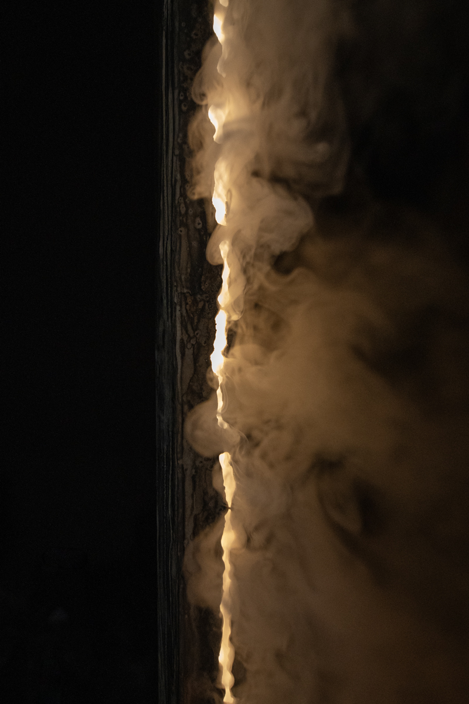
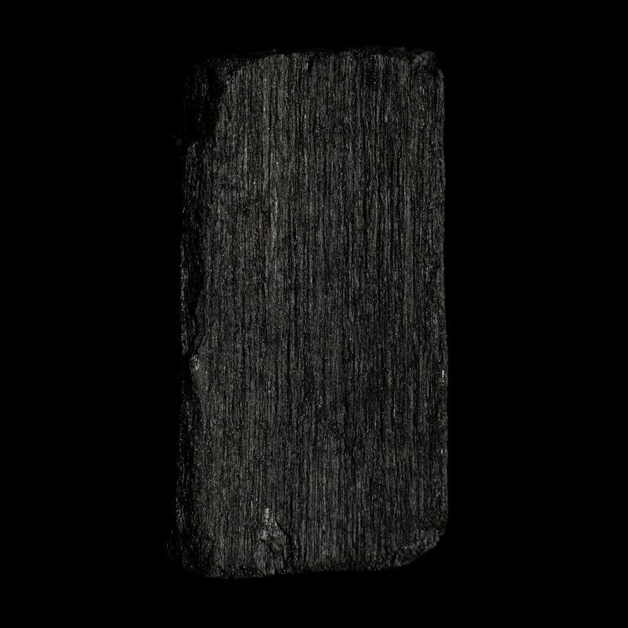
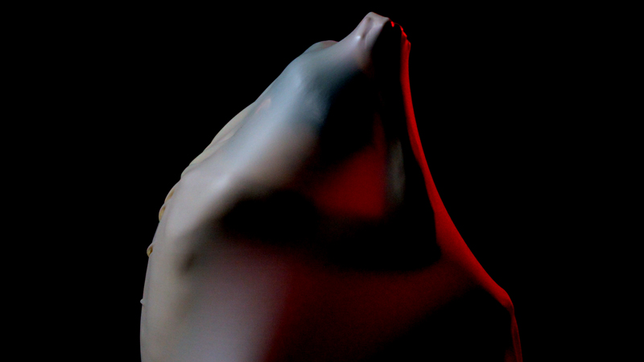
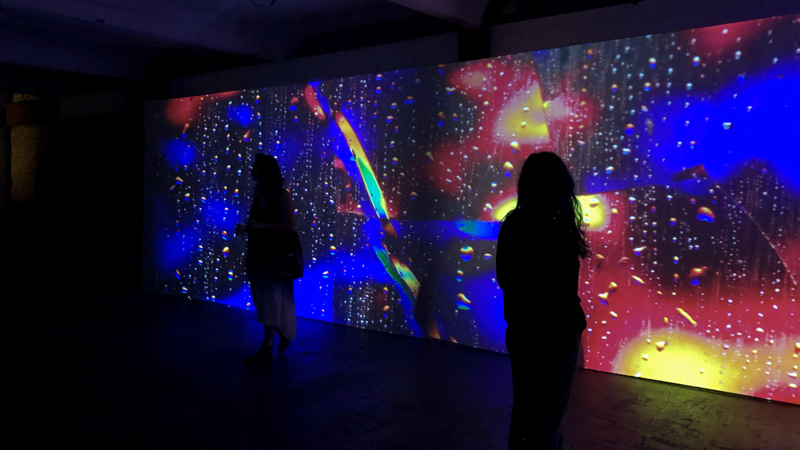
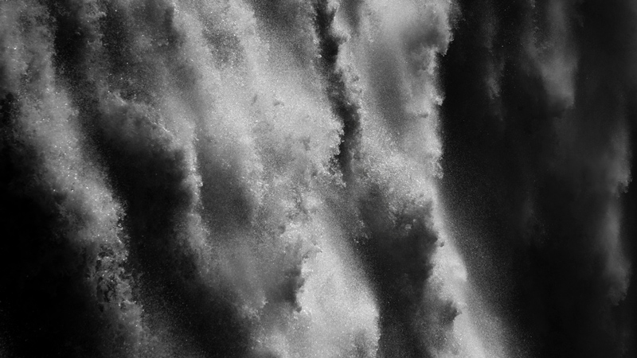

My work starts from matter. Water, fire, wax, carbon, silicon: each material carries a story, written in how it moves, burns, erodes or transforms. I look at these materials up close, at the scale where an image stops describing an object and starts to behave like a living thing, and where the line between natural and technological becomes thin.
Over the years this research has taken different forms, from video and light installation to live performance, but the question stays the same: what does a material remember, and what can it tell us about ourselves? A waterfall that behaves like a character, a charcoal landscape that burns down to embers, a candle flame mirrored by its electric double, circuits that sweat under the effort of machine learning, a body before memory reduced to light and pulse.

High Light
Those Days Will Never Return
Comfort of the Shadows, Into the Blinding Lights
Overclocked
HumanHigh Light, 2026
Light installation: candle, light sculpture, sensor. Metal beam, 5 × 5 cm section, height variable (min. 3 m).
In collaboration with Axel Schoterman.
Those Days Will Never Return, 2026
Single-channel video, 16:9, stereo sound.
Music: Marco Scipione.
Comfort of the Shadows, Into the Blinding Lights, 2025
Single-channel video, 7'31", 16:9, projection or screen, one strobe light, stereo sound.
Music: Hüma Utku.
Overclocked, 2025
Video installation.
Human, 2022
Single-channel video, 16:9, stereo sound.
Music: Grand River. Shot in Iceland during the SÍM residency.
Exhibitions and screenings:
B Contemporary Art Gallery, Ulaanbaatar (Comfort of the Shadows, Into the Blinding Lights)
NEO Shibuya TV, Shibuya Crossing, Tokyo (Overclocked)
Kühlhaus, BYOB, Berlin (Overclocked)
Residencies:
SÍM, Reykjavík, 2022